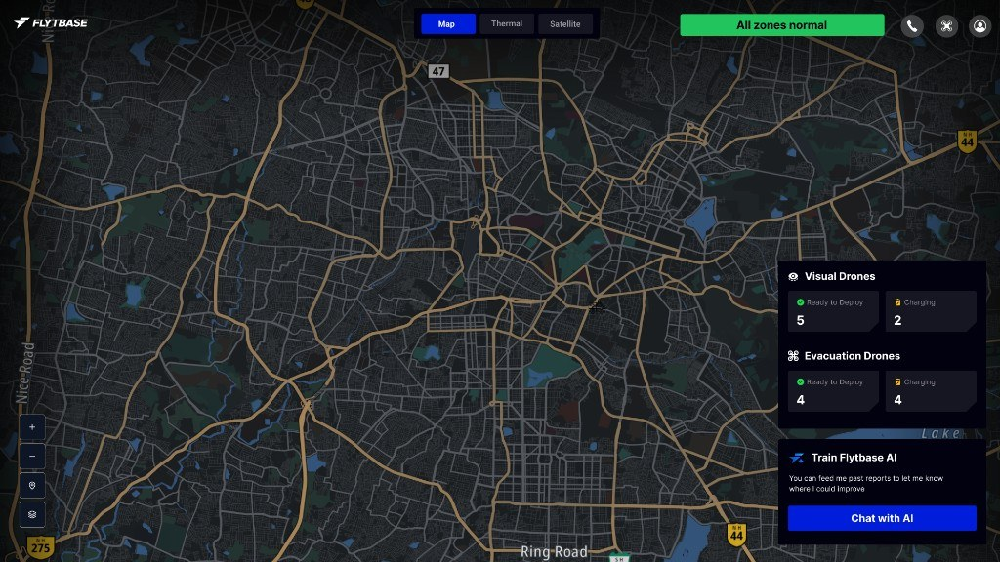
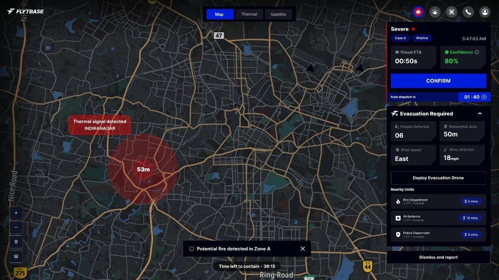
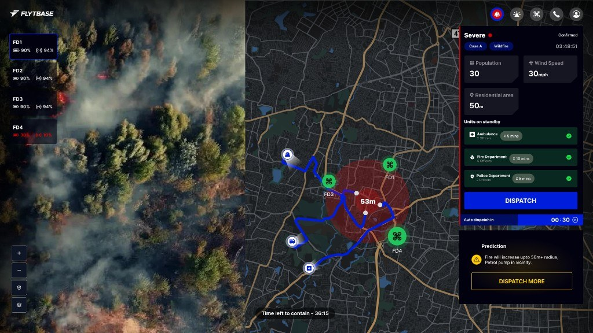
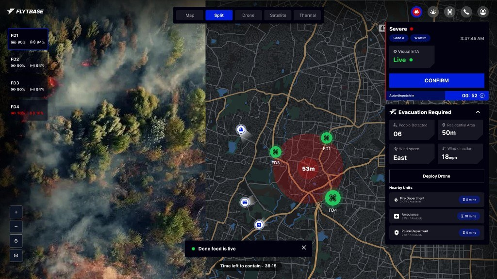
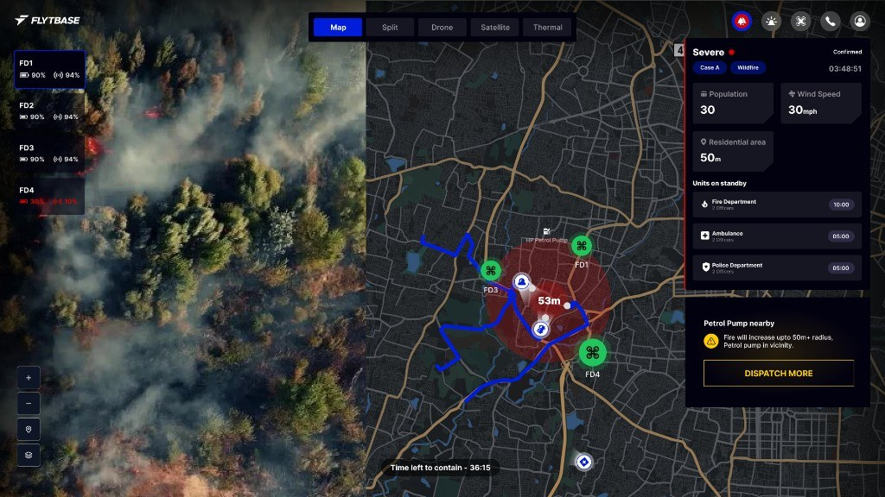

HMNZS Manawanui (2024–25)
Autopilot status was hard to see.
Lesson · Make system state obvious and keep human control visible.
Helping operators make critical decisions in 90 seconds. FlytBase uses autonomous drones and AI to detect emergencies, collect live information, and help response teams act faster.

“It’s 3:47 AM. A fire starts near homes. A sensor detects heat. Is it real? How serious is it? Where is it? Should we send help?”
Core challengeHow might we reduce decision time without creating cognitive overload, false confidence, or loss of human control?
No primary operator interviews were conducted during the project timeline.
Understand the emergency world.
Find the biggest problems.
Explore solutions.
Move toward design.
Key insightEmergency response is also an information problem. People need the right information at the right time.
Autopilot status was hard to see.
Lesson · Make system state obvious and keep human control visible.
A critical action ran without confirmation.
Lesson · Make actions clear and confirm risky ones.
No way to mark resolved cases.
Lesson · Track status clearly and prioritise alerts.
Vague errors like “Malfunction 54”.
Lesson · Match system language to real-world meaning.
Key insightThe dashboard was giving operators information, but not always helping them decide.
Rahul decides. Priya coordinates. Aniket acts.
One system, three experiencesThe same underlying data, with strategic, coordination and tactical views.
Single-incident EOC Director
JobDecide
Needs severity, AI confidence, evidence, a clear recommendation and override, within ~90 seconds.
PrimaryMulti-incident coordinator
JobCoordinate
Needs priority, resources, crews, drone allocation and status across 7–10 incidents.
SecondaryField incident commander
JobAct
Needs tactical drone intelligence, crew position, fire and wind data, and quick field actions.
TertiaryInstead of asking how the dashboard should look, we asked what the operator needs at each moment.
Key messageDesign for the decision, not the dashboard.
Severity, confidence, location, live data and a recommendation are visible immediately.
Show evidence, request more data, recommend instead of auto-executing, pause risky actions.
Prioritise by severity, collapse secondary information, protect attention.
A strong alert, a dominant call to action, and countdown, audio or haptics when appropriate.
ProblemOperators lose seconds scanning cluttered screens.
DecisionShow severity, location, live feed access and one clear recommendation first.
Why it helpsThe operator understands the situation in the first 5 seconds.

ProblemAll alerts felt the same in the old dashboard.
DecisionColour-coded severity and urgent alert states at the top.
Why it helpsSerious emergencies stand out immediately.

ProblemOperators did not know why AI flagged an alert.
DecisionShow what AI thinks, why it thinks it, and how confident it is.
Why it helpsBuilds trust without blind faith in automation.

ProblemSensor data alone is not enough to confirm a real fire.
DecisionLive visual and thermal feed within reach of the alert.
Why it helpsVisual confirmation reduces false alarms and hesitation.

ProblemLocation, teams and risks were spread across panels.
DecisionOne map showing fire, drones, teams, risks and routes.
Why it helpsSpatial awareness without jumping between screens.

The metrics we would use to measure success.
Testing results are not yet available, and we do not claim the design improved these numbers.
Show less.Explain better.Act faster.Keep humans in control.
Hiring, collaborating, or just want to talk design? My inbox is open.